Prologue: Before We Dive In
Welcome! If you are reading this, you probably want to understand what Machine Learning actually is, without drowning in a sea of terrifying Greek letters and dense academic jargon.
This tutorial is designed to be different. It is built on the belief that the core concepts of AI are deeply intuitive. Before we start writing code or crunching numbers, we need to understand the philosophy of how a machine learns. This guide is meant to build your intuition from the ground up.
Did an AI Write This?
In the spirit of absolute transparency: Yes and No.
The concepts, the structure, the analogies (like the blindfolded hiker on the error mountain), and the core understanding are entirely mine. However, I used Generative AI as an "advanced typewriter" to help me format the HTML, polish the grammar, and generate the clean Python code snippets for the visualizations. It is a human-architected, AI-assisted project—exactly how modern coding is done!
How to Read This Guide
As you scroll through, you will notice a few unique elements. Here is how to use them:
- The Visuals (They aren't just for show): You will see plenty of figures, plots, and even some slightly funny or quirky diagrams. Please don't just skim past them! They are specifically designed to make abstract mathematical concepts (like loss functions and optimizers) visual and "sticky" in your brain.
- The Q&A Boxes: Scattered throughout the tutorial, you will find interactive dropdown boxes with titles like "Questions your brain just overfitted to..." or "Questions that may come to your mind..." Don't let the changing titles confuse you! These are simply pit-stops where I address the most common points of confusion and misconceptions that students face.
👋 About the Author
You might be wondering who is guiding you on this journey. My name is Haripriya Sahoo, and I am a PhD student at National Sun Yat-sen University.
With years of hands-on experience in the field of Machine Learning, my academic research focuses on the intersection of AI and complex physical systems—specifically, using advanced machine learning techniques (like neural networks and super-resolution) to model and understand chaotic ocean dynamics.
I have spent years wrestling with these algorithms so that you don't have to. My goal is to take the complex math I use in my research every day and translate it into plain, intuitive English for you. Let's get started!
1. Introduction to Machine Learning
We are interacting with Machine Learning amples of times a day. We depend on popular chatbot like ChatGPT, Gemini, Cloude to reply to a mail, to search for a restaurant, or to get directions and many more. I don't have to write more as you might be thinking now "Do I actually think anymore, or do I just outsource my brain to chatbots?" 😅. You may not notice it, but Machine Learning is working behind the scenes; from movie recommendation in Netflix to stopping suspicious bank transactions to filtering spam mails from your inbox. So, let's start by exploring what Machine Learning is and how it fits within the bigger picture of Artificial Intelligence.
Artificial Intelligence (AI) is the broader concept and science of engineering systems capable of mimicking human intelligence to make decisions, solve problems, or perform tasks. In its most basic form, an AI system can simply be a massive list of hard-coded "if-then" rules manually written by a programmer to automate a process without needing active human involvement. While it feels like a modern invention, the concept has been around for decades. Long before we had modern supercomputers, the basic idea of a machine making an automated "decision" started with simple feedback loops. Learn more about how AI came to existence.
Real-world problems are too complex to be solved with endless "if-then" rules or exact solution-oriented approaches. To build systems that can adapt and learn from data, a more flexible approach was needed — and boom, Machine Learning comes to the rescue. Machine Learning (ML) is a specific, powerful subfield that acts as the driving engine for modern AI. Instead of a human explicitly programming every logical rule, ML uses mathematical algorithms to analyze massive datasets, discover hidden patterns, and autonomously "learn" how to perform a task or make a prediction.
All Machine Learning is AI, but not all AI is Machine Learning. You can think of AI as the overarching company, while Machine Learning is just one elite team working inside it. Instead of relying on strict, human-written instructions, ML achieves intelligence by feeding the machine raw data and letting it figure out the underlying rules for itself. Figure_1 shows the relationship between AI, ML, and other related fields like Deep Learning and Generative AI. Machine Learning is a subset of the broader Artificial Intelligence field. Deep Learning is an even more specialized subset of ML, while Generative AI spans these areas to focus on creating brand new content.

Figure_1.1: The AI family tree.
A New Approach to Problem Solving: When Data Becomes the Teacher
In traditional programming, a human writes the Rules (the logic or code), feeds in the Data (the input), and the computer outputs the Answers. What if we have input and output but we don't know the rule?.
Machine Learning resolves the above problem by flipping the process. We feed the computer the Data and the correct Answers, and the machine's mathematical job is to figure out the Rules.
For many real-world problems, the rules are simply too difficult or impossible for a human to write down. Imagine trying to write a traditional computer program to recognize a picture of a cake. What rules would you code? You might start with: "If the object is a round cylinder covered in frosting, output 'Cake'." But what if it is a rectangular sheet cake? What if it is a towering three-tiered wedding cake? What if it is a tiny cupcake, or someone already cut a slice out of it? To cover every shape, flavor, decoration, and lighting condition, you would have to write millions of lines of complex "if-then" statements, and the program would still eventually fail (and probably misclassify a frosted donut).
With Machine Learning, we don't write rigid rules about frosting or shape. We simply show the computer thousands of pictures of all kinds of cakes (the Data) along with a label that says "This is a cake" (the Answer). The algorithm analyzes the pixels and figures out its own mathematical Rules to identify a cake in any future photograph.

Figure_1.2: Difference between Traditional Programming and Machine Learning.
From Guess to Precision: The Learning Process
To understand how this mathematical "learning" actually happens, look at the image below. Imagine a child trying to draw a perfect circle for the very first time. A Machine Learning system uses the exact same trial-and-error process, broken down into three components:
- The Model (The Brain): The kid in the image tries to draw a perfect circle. On its very first try, it doesn't know the rules, so its "circle" might come out looking like a jagged star or a wobbly mess.
- The Loss Function (The Grader): His mom, the teacher gives him a reference to draw a circle. He draws everytime and checks if he can draw the perfect circle or not from the paper given by his mom.
- The Optimizer (The Learner): This is where the actual learning happens. Once the child realizes the drawing is wrong, they adjust their grip and try a smoother wrist motion for the next attempt. In a machine, the Optimizer tweaks the internal settings (the math) based on the grader's score so the model's next guess is just a tiny bit closer to perfection. By repeating this process thousands of times, the chaotic scribbles eventually turn into a flawless circle.

Figure_1.3: Just like a student practicing a drawing, an ML model improves through repeated trial, error, and adjustment.
From Boring Data to Real-World Discoveries
Machine learning is not just for everyday apps like chatbots or movie recommendations anymore. It is now a highly useful tool for scientists and professionals. With the help of machine learning, computers can find hidden patterns and make quick, accurate guesses much faster than older methods. Data is no longer just a boring Excel sheet to stare at and get stuck on; it can now turn the tables by helping us discover new, unseen outcomes. The goal of this tutorial is to help you understand how machine learning actually works, instead of just treating it like magic. By learning the basics, you can build models that are accurate and solve real-world problems. If you want to improve your own work using machine learning, be sure to go through the complete lecture notes.
Questions that may come to your mind… right after you say 'I understand'.
Q1: What are there in AI which is not Machine Learning?
Q2: Can machine learn without help of human?
Q3: Is chatbot a part of Machine Learning?
3. The Three Main Types of Machine Learning
Machine Learning isn't just one giant algorithm. It's more like a toolbox. Depending on the kind of data you have and what you want to achieve, you pick a different tool. We generally break these down into three main categories based on how the machine is taught.
Supervised Learning: The Teacher-Student Model
Supervised Learning is a type of machine learning in which a model is trained using a labeled dataset, meaning that each input data point has a corresponding correct output (target). The algorithm learns the relationship between inputs and outputs so it can predict the output for new, unseen data.
Example: Imagine a parent sitting with a child, holding up flashcards. The parent shows a picture of a cat and says, "Cat." The parent shows a dog and says, "Dog." The child guesses the next one, and the parent corrects them if they are wrong. After seeing enough flashcards (data) with the right answers (labels), the child can eventually look at a real animal in the park and correctly shout, "Dog!"
📚 Supervised Models
Learning from labeled data to predict the future.
- Linear Regression & Support Vector Machines (SVM): The classic statistical models for drawing trend lines and making simple categories.
- Multi-Layer Perceptron (MLP): The foundational, standard "Artificial Neural Network."
- Convolutional Neural Networks (CNN): The undisputed kings of image processing and spatial data.
- U-Net: A specialized, highly powerful CNN architecture designed for image segmentation and super-resolution (perfect for enhancing the resolution of scientific grid data, like ocean currents or weather maps).
- Recurrent Neural Networks (RNN) & LSTMs: Models that have a "memory," making them excellent for sequential or time-series data (like predicting tides over time).
- Transformers: The engine behind modern AI (like ChatGPT). They use "attention" mechanisms to understand complex relationships in sequences, text, and even vision tasks.
- DeepONet & PINNs (Physics-Informed Neural Networks): Cutting-edge scientific models that don't just learn data, but actually learn complex mathematical operators and the underlying laws of physics (like fluid dynamics).
Unsupervised Learning: Finding Hidden Patterns
Unsupervised Learning is a type of machine learning where the model is trained on unlabeled data, meaning the data does not have predefined outputs. The algorithm tries to discover patterns, structures, or relationships within the data.
Example: Imagine giving a child a giant box of mixed-up toys—blocks, toy cars, and stuffed animals—and walking away. You don't give them any instructions or tell them what the toys are called. Naturally, the child will start organizing them. They will put all the soft things in one pile, the things with wheels in another, and the square blocks in a third. The child discovered the hidden structure of the toys completely on their own without needing an answer key.
🕵️♂️ Unsupervised Models
Finding hidden structures in raw data.
- K-Means Clustering: Automatically groups data points into distinct piles based on similarity without human labels.
- Principal Component Analysis (PCA): Squishes down massive, complex datasets to highlight only the most important features (Dimensionality Reduction).
- Autoencoders: Neural networks that learn to compress data and then reconstruct it, perfect for removing noise from data or finding anomalies.
- Generative Adversarial Networks (GANs): Two networks competing against each other to generate entirely new, highly realistic data (like synthetic satellite imagery or deepfake videos).
Reinforcement Learning: Trial and Error
Reinforcement Learning (RL) is a type of machine learning in which an agent learns to make decisions by interacting with an environment. The agent receives rewards or penalties based on its actions and learns to choose actions that maximize the cumulative reward over time.
Example: Imagine a child learning to ride a bicycle. You cannot give them a "dataset" of instructions on how to balance; they just have to get on and try. When they lean too far left, they fall over and scrape their knee (a penalty). When they pedal straight and keep their balance, they feel the thrill of moving forward (a reward). Through pure trial and error, their brain figures out the exact muscle movements needed to maximize the fun and minimize the falling.
🎮 Reinforcement Models
Learning by trial and error in an environment.
- Q-Learning: A classic algorithm where an agent creates a "cheat sheet" (Q-table) to remember the value of taking specific actions in specific states.
- Deep Q-Networks (DQN): Combines Q-Learning with Deep Neural Networks so the agent can handle incredibly complex environments (like playing video games directly from the screen pixels).
- Proximal Policy Optimization (PPO): Currently the standard algorithm for training highly complex robotics and advanced AI agents to perform smooth, continuous tasks.

Figure_3.1: Types of Machine learning in child analogy.
Quick Summary
- Supervised: You have the data and the answers. You want to predict the future.
- Unsupervised: You have raw data but no answers. You want to discover hidden groupings.
- Reinforcement: You have an environment, not a dataset. You want the computer to learn by doing.
Don't worry if these names sound intimidating right now! We will dive deeper into the full learning process, these specific architectures, and how to actually build them to solve problems for famous modelsin the coming sections.
Unsupervised learning detected patterns… I detected confusion.
Q1: I have a brand new project. How do I actually decide which type of ML to use?
Q2: Do I have to strictly choose just one type? Can I mix Supervised and Unsupervised learning together?
Q3: Reinforcement Learning sounds amazing for robots, but is it actually practical for my everyday data analysis?
4. How does a Machine Actually Learn? (Loss Functions, Gradient Descent, & Overfitting)
In the previous section, we talked about the types of Machine Learning, like the Teacher-Student model. But how does the "student" actually study? How does a computer program go from making completely random guesses to accurately predicting complex physical systems? To understand the magic, we need to look under the hood at the fundamental concepts that drive the learning process.
1. The Inputs and Outputs (Features and Labels)
Before a model can learn, it needs to know what it is looking at.
- Features (The Clues): These are the input variables. If you are trying to predict ocean wave dynamics, your features might be wind speed, atmospheric pressure, and sea surface temperature.
- Labels (The Answers): This is the exact outcome you want the model to predict. In our ocean example, the label would be the actual measured wave height.
The model's entire goal is to find the mathematical relationship that perfectly connects the Features to the Labels. To do this, it uses internal dials called Weights (how important a feature is) and Biases (baseline adjustments).
2. The Grading Rubric (The Loss Function)
When a model first starts, its internal Weights are set completely at random. So, its first prediction will be terrible. How does the computer know it made a mistake? It uses a Loss Function (also called a Cost Function).
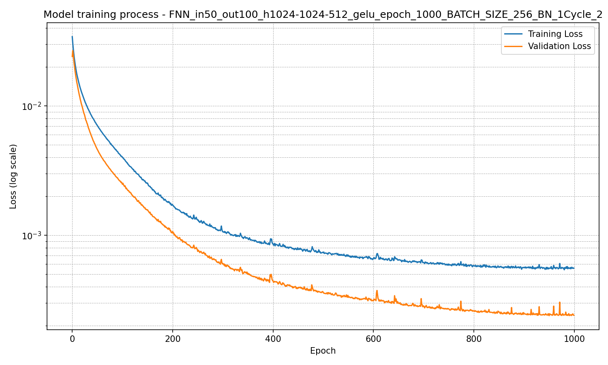
Figure 4.1: Loss function curve over time in log scale.
The Loss Function is simply a mathematical way of measuring exactly how wrong the model is. It takes the model's guess, compares it to the true Label, and calculates a penalty score. A common example is Mean Squared Error (MSE), which looks like this:
The ultimate goal of Machine Learning is simply to make the Loss score as close to zero as possible.
This is the moment of truth for the model. The Loss Function is the only feedback it gets. If the loss is high, it knows it needs to adjust its internal settings (Weights and Biases). If the loss is low (\(loss<\epsilon, \quad \textit{where} \quad \epsilon \to 0 \)), it means the model is on the right track.

Figure 4.0: Loss function in a plot.
3. The Engine: Gradient Descent
Now that the model knows it is wrong, how does it fix itself? It uses an optimization algorithm called Gradient Descent.
Imagine you are standing at the top of a foggy mountain, blindfolded, and you need to get to the very bottom of the valley (where the Loss is zero). You can't see the whole mountain, but you can feel the slope of the ground under your feet. You take a step in the direction that goes down the steepest. In the below figure, the steepest point of the vally is the cross signedd one. So the person try to reach there.
Figure 4.1a: A 3D loss function surface showing a gradient descent path moving from a high error region down into the global minimum valley.
Gradient Descent does exactly this. It calculates the slope of the error and tweaks the internal Weights and Biases just a tiny bit in the downward direction. It repeats this process thousands of times (called Epochs), taking step after step until it reaches the flat bottom of the valley.
Jumps to the Linear Algebra section. Recommended for those who want to see the calculus behind the algorithm!
The Evolution of Optimizers: Controlling the Learning Rate
Gradient Descent is a brilliant concept, but it introduces a massive practical challenge: The Learning Rate (\(\alpha\)). If Gradient Descent tells the model which direction to step, the Learning Rate determines exactly how big that step should be.
- If \(\alpha\) is too small: The algorithm takes microscopic, baby steps. It will eventually reach the bottom, but it might take days or weeks of computing time.
- If \(\alpha\) is too large: The algorithm takes massive leaps. It might completely overshoot the bottom of the valley, bounce up the other side, and make the error worse.
Historically, data scientists had to manually guess the perfect "Goldilocks" step size. To solve this frustrating trial-and-error process, researchers invented Schedules and Optimizers—advanced algorithms built on top of Gradient Descent that intelligently adjust the learning rate on the fly.
Let's trace the 4 evolutionary stages of these algorithms to understand how we arrived at the modern champion.
Stage 1: Fixed Learning Rate (The Cruise Control)
In standard Stochastic Gradient Descent (SGD), a single, constant value (like 0.01) is maintained from the first epoch to the very last.
- How it works: It is like setting your car's cruise control to 60 mph and taking your foot off the pedal.
Stage 2: Learning Rate Decay (The Planned Braking)
To fix the rigidness of SGD, developers created "Schedules" that deliberately shrink the learning rate over time. It allows the model to take massive steps early on, and tiny, precise steps as it approaches the finish line.
- Step Decay: Drops the rate by a massive chunk at set intervals (e.g., cutting it in half every 10 epochs). Analogy: Downshifting gears in a manual car.
- Exponential Decay: Smoothly and continuously slows the rate down on a mathematical curve. Analogy: Gently pressing the brake pedal as you approach a red light.
Stage 3: Cyclic Learning Rate (The Rollercoaster)
Instead of strictly slowing down, the learning rate oscillates back and forth between a minimum and maximum limit.
- Why do this? Loss landscapes are full of "fake valleys" (Local Minima). If a model decays its learning rate too soon, it might get permanently stuck in a shallow ditch. A cyclic burst of "high speed" gives the model the sudden momentum to jump out of the ditch and continue exploring for the true, lowest bottom.
Stage 4: Adaptive Optimizers (The Smart Navigators)
This is the bleeding edge of optimization. Instead of having one global learning rate for the whole model, adaptive methods calculate a unique, dynamic learning rate for every single parameter (weight) based on the actual data they are receiving in real-time.
- AdaGrad: Great for sparse data, but it shrinks the learning rate so aggressively that the model often stops learning entirely before reaching the goal.
- RMSprop: Invented to fix AdaGrad's flaw by using a "moving average" to stop the learning rate from decaying to zero too quickly.
- The Champion — Adam (Adaptive Moment Estimation): The ultimate hybrid. It combines the smart pacing of RMSprop with the "rolling boulder" momentum of earlier algorithms.
Adam calculates two running averages for every single weight:
- Momentum (\(m_t\)): The average of past gradients. (Builds up speed if the slope keeps going in the same direction).
- Variance (\(v_t\)): The average of past squared gradients. (Measures how wild and volatile the updates have been).
After a quick bias correction, Adam calculates the new weight using this master formula:
The Verdict: Why Adam Wins
In 95% of modern Deep Learning projects, Adam is the undisputed champion and the default starting point.
A Practical Example: Training an Image Classifier
Imagine you are training a neural network to recognize thousands of different animals.
- If you use a Fixed Rate, you have to guess the perfect speed. If you guess wrong, the model never learns to tell a dog from a cat.
- If you use Step Decay, you have to manually configure exactly which epoch to slow down on. It takes days of trial and error.
- If you use Adam, you simply set the initial learning rate to
0.001and go to sleep. Adam automatically recognizes that rare, subtle features (like "whiskers") need a boosted learning rate, while highly volatile features (like "background color") need their learning rates shrunk to prevent chaotic jumping. It customizes the journey for every single feature!
Explore Other Optimizers Click to expand ⯆
Gradient Descent (and Adam) is the undisputed king of Deep Learning. But depending on the type of problem, data scientists have a few other fascinating tools in their optimization toolbox.
1. Closed-Form Solutions (Normal Equation)
For simple models like standard Linear Regression, you don't actually need to take "steps" down a mountain at all. You can use linear algebra to jump directly to the exact bottom in a single calculation.
- Why we don't always use it: It requires computing the inverse of massive matrices. If you have millions of features, doing this math will crash even the world's most powerful supercomputers.
2. Second-Order Methods (Newton’s Method & L-BFGS)
Gradient Descent only calculates the slope. Second-Order methods calculate the slope and the curvature of the mountain, allowing for massive, highly accurate leaps straight toward the bottom.
- Why we don't always use it: Calculating the curvature of a neural network with billions of parameters requires an impossible amount of computer memory.
3. Nature-Inspired Algorithms
Evolutionary & Genetic Algorithms (GA)
Instead of one hiker, you drop 1,000 random hikers across the mountain. You "kill" the ones that are stuck at the top, and allow the successful hikers to "breed" (combine their coordinates) to create a new generation that naturally evolves toward the lowest valley.
Particle Swarm Optimization (PSO)
Inspired by flocks of birds. You release a "swarm" of dots onto the mountain. They buzz around, constantly adjusting their flight paths based on the group's shared knowledge until they all swarm the global minimum.
4. The Goldilocks Problem (Overfitting vs. Underfitting)
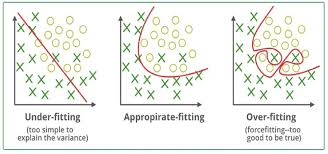
Figure 4.2: Visualizing Underfitting, Optimal Fitting, and Overfitting.
As the model trains via Gradient Descent, we have to watch out for two massive traps:
- Underfitting (Too Simple): The model is like a lazy student. It didn't look at the features closely enough and drew a straight, overly simplistic line through complex data. It performs terribly.
- Overfitting (Too Complex): The model is like a student who memorized the exact answers to a practice test instead of learning the actual concepts. It connects every single dot perfectly, including the random noise and errors in your sensors. It scores a 100% on the training data, but the second you give it brand new data, it fails completely.
The art of Machine Learning is finding the "Goldilocks Zone"—a model that is complex enough to capture the true underlying physics or patterns, but general enough to handle data it has never seen before.
Why Does Overfitting Happen?
Overfitting is typically the result of an imbalance between the complexity of the model and the quality of the data. The three most common culprits are:
- 1. The Model is Too Complex: If you use a 150-layer Deep Neural Network to predict housing prices based on just square footage and zip code, the model has too much "brainpower." It uses its massive capacity to draw wild, hyper-specific mathematical curves through every single outlier.
- 2. Not Enough Data: If you only show a computer 5 pictures of cats, and all 5 cats happen to be sitting on orange rugs, a complex model might learn that "orange rugs" are the defining feature of a cat.
- 3. Training for Too Long: If you let a model train for 10,000 epochs on a small dataset, it will eventually squeeze every last drop of error out by perfectly touching every single data point, destroying its ability to generalize.
The Diagnosis & Antidotes
Because an overfit model achieves near-perfect scores on its training data, it creates a dangerous illusion of success. If you plot the Loss on a graph, the signature footprint of overfitting is a diverging line: The Training Error continues to drop, while the Validation Error hits a floor and then suddenly begins to rise.
To cure overfitting, data scientists use techniques known as Regularization:
| Early Stopping | Monitoring the validation loss and halting the training process the second the error starts to rise. |
| Dropout | Randomly turning off a percentage of neurons during training so the network cannot rely on highly specific, brittle pathways. |
| Data Augmentation | Artificially increasing the dataset by flipping, rotating, or adding slight noise to the training data. |
| L1/L2 Penalties | Adding a mathematical tax to the loss function that punishes the model for having weights that are too large or complex. |
Questions your brain just overfitted to
Q1: What are there in AI which is not Machine Learning?
Q2: Can machine learn without help of human?
Q3: Is chatbot a part of Machine Learning?
5. Data Preparation (Before the Magic Happens)
There is a famous saying in computer science: "Garbage In, Garbage Out." You can build the most advanced, mathematically perfect Neural Network in the world, but if you feed it messy, broken data, it will give you messy, broken predictions. even after 1000 of trials the nueral network will not be able to learn the pattern from the data. Most of the time people change the parameters and techniques without thinking about the data. They just want to see the magic happen. But the magic will not happen if the data is not good enough. The quality of your data is the foundation of your entire machine learning project. If you start with a shaky foundation, no amount of fancy algorithms will save you.
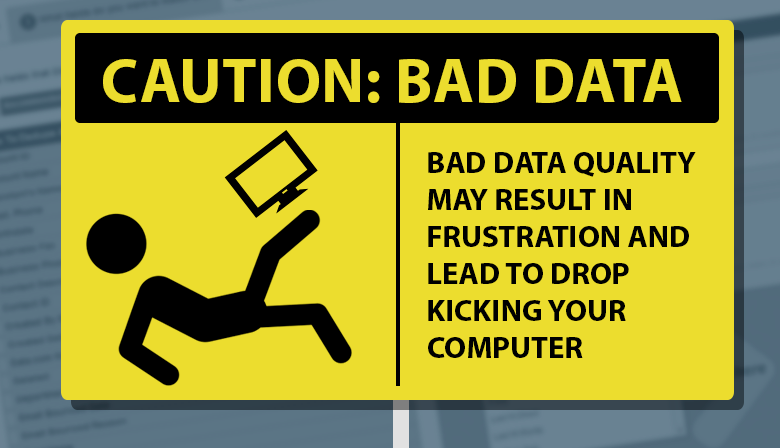
Figure_5.1:data frustration.
In this AI world Machine always needs help of humans in one way or other. Machine always try to find the pattern. So if there is a corupted data, then machine try to get the paatern from the corrupted data much like a student who memorizes a textbook full of typos, confidently writing down the wrong answers on the final exam because they assumed every misprint was a fundamental rule of the universe. The researcher or nural network analysist should have the idea of the data more than machine. If there is some noisy data, missing data or corrupted data. Before we can feed our data into the Gradient Descent engine, it must go through crucial steps: Cleaning, Scaling, Transforming, Balancing, Encoding, and Splitting.
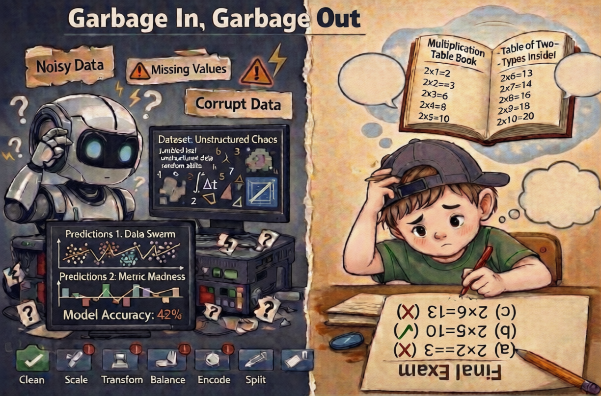
Figure_5.2:GIGO.
Step 1: Categorical Encoding (Translating Words to Math)
Neural Networks are, at their core, giant math equations. They only speak numbers. If you feed a Neural Network a column that says City: "New York", the mathematical engine will instantly crash because you cannot multiply "New York" by a Weight. We must translate words into math:
- One-Hot Encoding (For "Equal" Words): Use this when text has no mathematical order (like Colors: Red, Green, Blue). If you assign them 1, 2, and 3, the AI will mathematically assume Blue is "3 times larger" than Red, ruining the model! Instead, we create a new binary column for every category (e.g.,
Is_Red: 1 or 0,Is_Green: 1 or 0).
Step 2: Handling Class Imbalance (The Accuracy Trap)
The Problem: If one class completely dominates the dataset, the Neural Network will naturally become biased toward it. Imagine you are building an AI to detect manufacturing defects. 99% of your products are perfect, and 1% are defective. If you feed this directly into a model, the Gradient Descent engine looks for the easiest mathematical path to a high score. It quickly realizes: "If I just guess 'Perfect' every single time, I get a 99% Accuracy score!" The model looks like a genius on paper, but completely fails its actual job in the real world.
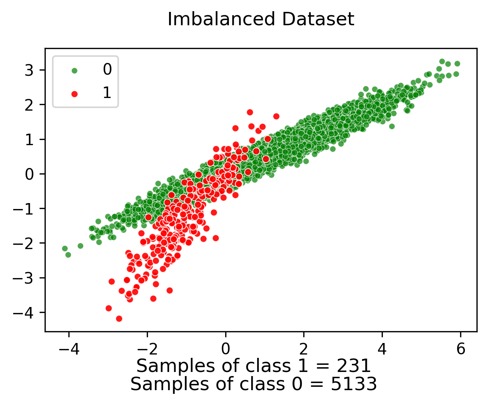
Figure_5.3:Class Inbalance.
Early detection of the class imbalance
Because standard "Accuracy" is a trap when dealing with imbalanced data, we have to throw it out. We replace it with the Confusion Matrix. Instead of one big "Accuracy" grade, we break every prediction into four strict categories:
- True Positives (TP): Correctly predicted minority.
- True Negatives (TN): Correctly predicted majority
- False Positives (FP): Predicted minority, actually majority (Type I Error)
- False Negatives (FN): Predicted majority, actually minority (Type II Error)
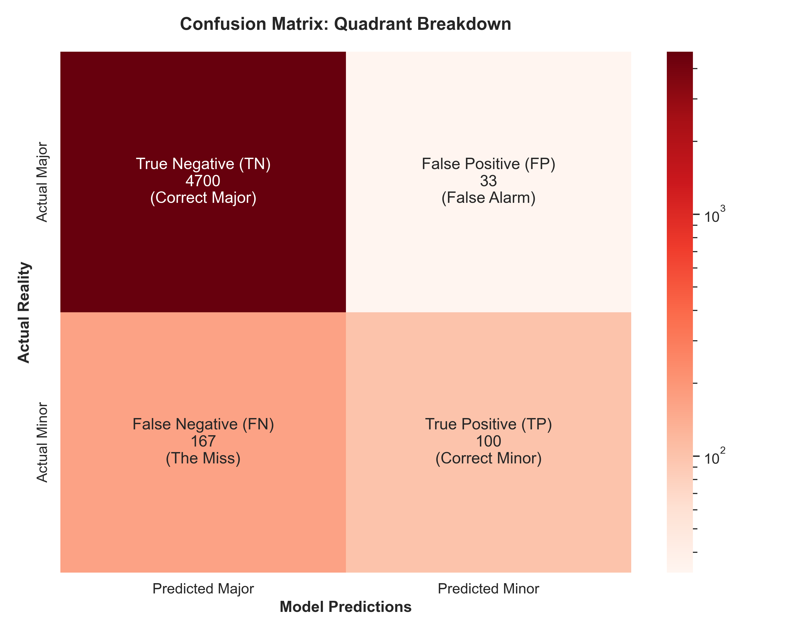
Figure_5.4:confusion matrix.
The Truth-Tellers: Precision, Recall, and F1-Score
Standard accuracy tells you how often the model is right, but it doesn't tell you how it is failing. To solve the accuracy trap, we use three specialized metrics that act as the "truth-tellers" of machine learning:
1. Precision (Quality): This measures how reliable the model is when it predicts the minority class.
"Of all the items I flagged as defective, how many actually were?"
Precision = TP / (TP + FP)
Importance: High precision is vital when a "False Alarm" is expensive (e.g., incorrectly marking a legitimate bank transaction as fraud and freezing a customer's card).
2. Recall (Quantity): Also called Sensitivity, this measures the model’s ability to find all the minority cases.
"Of all the actual defects in the factory, how many did I successfully catch?"
Recall = TP / (TP + FN)
Importance: High recall is crucial when a "Miss" is dangerous (e.g., a medical AI failing to detect a tumor).
3. F1-Score (The Balance): Often, Precision and Recall are in a "tug-of-war." If you try to catch every defect (High Recall), you might start flagging good products by mistake (Low Precision). The F1-Score is the harmonic mean that forces both numbers to be high.
F1 = 2 * ( (Precision * Recall) / (Precision + Recall) )
Importance: This is the "Gold Standard" for imbalanced data. If a model has 99% accuracy but an F1-Score of 0, you know the model is just guessing and hasn't actually learned the pattern.
The Data Solution: To prevent these biased predictions, we must artificially balance the scales before training:
- Undersampling: Randomly deleting thousands of the "Normal" rows until you have an equal 50/50 split. (Fast, but wastes good data).
- Oversampling: Randomly duplicating the minority "Defective" rows until they match the count of the majority class.
- SMOTE (Synthetic Minority Over-sampling Technique): The industry standard. Instead of just copying existing data, SMOTE uses nearest-neighbors mathematics to generate brand new, realistic data points for the minority class.
Step 3: Data Cleaning (The 6-Step Checklist)
Real-world scientific data is never perfect.They most of the time contain Sensors break, transmission signals drop, and humans make typos and many more. Rather than those errors dataset contains duplicate columns,linearly dependent columns which gives wrong insights to the model. To prevent our model from learning the "wrong physics," we must run our data through this rigorous checklist:
- 1. Check for Duplicate Rows: Sensors can stutter and record the exact same event twice. We must deduplicate the dataset to prevent the model from artificially inflating the importance of a single repeated event.
- 1. Check for Duplicate Rows: Sensors can stutter and record the exact same event twice. We must deduplicate the dataset to prevent the model from artificially inflating the importance of a single repeated event.
- 2. Linearly Dependent Columns: Sometimes two columns are perfectly correlated or linearly dependent. We should avoid these collumns. In figure 5.5, first 3 columns are linearly independent other 4 are dependent to any or two of first column. Ignore the dependent columns using Dimensional analysis.
- 3. Calculate Missing Values as a Percentage: Before fixing Missing Values (NaNs), measure the damage. If a column is missing 2% of its data, it is a minor issue. If it is missing 80%, it requires drastic action. If a column is missing the vast majority of its data, or if it has absolutely no predictive value (like a "Sensor Serial Number" or "Database ID"), drop the column entirely. It is just noise.
- 5. Sensor error or humanize error Sometimes a sensor glitches and records a wave height of 500 meters. Detect those Outliers with Box Plots. Visualizing your data with a Box Plot helps you identify data points that fall far outside the Interquartile Range (IQR). If you don't remove or cap these impossible outliers, the model will severely adjust its Weights to try and account for them.
-
6. Data Formatting: Ensure your data speaks the right language. Dates must be formatted as proper
DateTimeobjects (not raw text), strings should be converted to categories, and integers shouldn't be accidentally saved as strings. - 7. Handling NaNs: Most of the time real time data contains NaN value. These nans may come from glitch of sensor or from different mediaum. If the Nan comes from gliches of sensor, you can drop the row sometime or interpolate it. If it is due to two medium then mask the Nans. For example: we have ocean current around an island. If land is there we will get NaN value for current. In that case, we can mask the land. A ocean and land masking figure is presented in Fig. 5.8. The grey part is land which is masked and the ocean part shows the valid data.
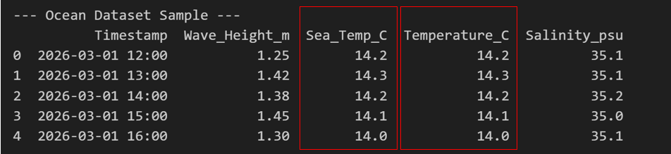
Figure_5.5:Duplicate Rows.
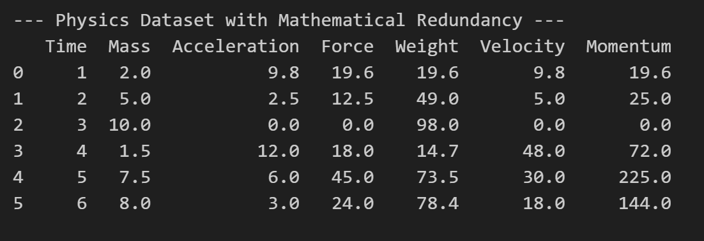
Figure_5.6:Unique Values in Categorical Columns.
sns.boxplot(x=df['Data'])
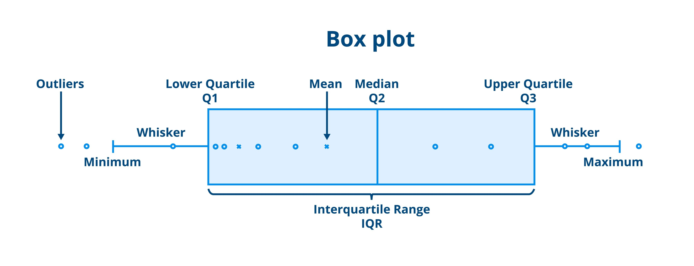
Figure_5.7:Outliers in the Data.
mask = np.where(np.isnan(data), 0, 1)
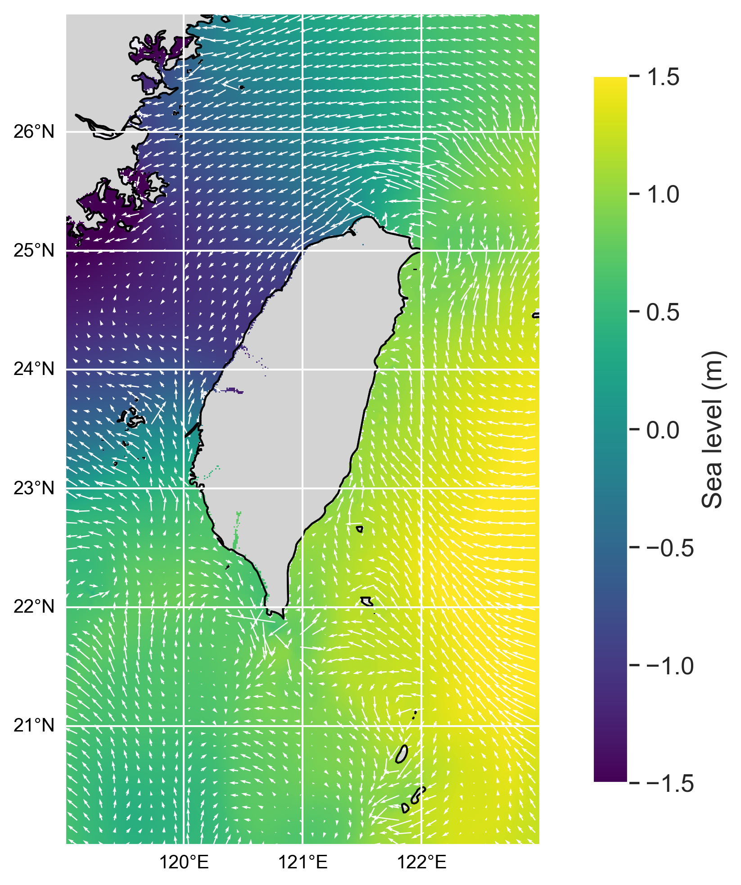
Figure_5.8: Ocean and Land Masking.
Step 4: Transformation of data.
Some data is in scattered way ranging from 0 to 1000. Most of the data is in the range of 0 to 1. less data is in 1000 range. If we feed this data directly to the model, it will give more importance to the data with higher range. So we need to transform the data into a similar range. This is called feature scaling. There are different techniques for feature scaling like normalization, standardization, min-max scaling etc. We will discuss these techniques in detail in the next section. So the data should be transformed to log scale, square root scale or any other scale depending on the distribution of the data. For example, if the data is highly skewed, we can use log transformation to make it more normal. If the data has a lot of outliers, we can use robust scaling to reduce the influence of outliers. The choice of transformation depends on the specific characteristics of your dataset and the requirements of your model.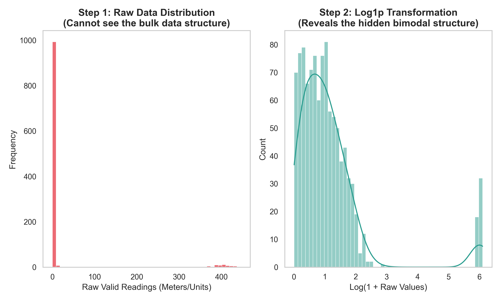
Figure_5.9: Log transformation.
Step 5: Feature Scaling
The most critical mathematical step before training is the scaling of features. Machine learning models look at raw numbers; they do not understand units of measurement. We need to keep every feature on a similar scale so the model treats them equally. If one feature has values in the hundreds of thousands and another has values between 0 and 1, the model will assume the larger numbers are more important, even if they are not!
Suppose you are predicting ocean currents based on two features: Atmospheric Pressure (measured in Pascals, around 101,325) and Wave Height (measured in meters, around 2.5). Because 101,325 is massively larger than 2.5, the Gradient Descent algorithm will naturally assume that Pressure is millions of times more important than Wave Height, simply because the number is bigger!
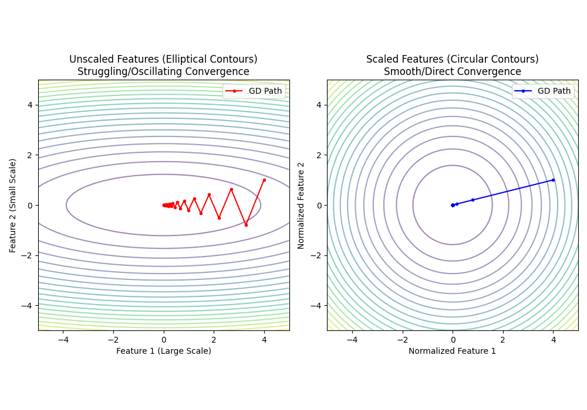
Figure_5.10: Image showing a contour map of gradient descent struggling to converge on unscaled, stretched elliptical axes versus smoothly converging on perfectly scaled, circular axes.
To fix this feature dominance, we squish all our features down to a similar scale so the model treats them equally. Here are the five main ways to do this:
1. Absolute Maximum Scaling
This method simply divides every value by the maximum absolute value in that column. It preserves the data's exact original shape and sparsity but forces everything between -1 and 1.
2. Min-Max Scaling
This scales all your data to fit perfectly between 0 and 1. It is heavily used in image processing where pixel values have strict boundaries.
3. Normalization (Vector Normalization)
Instead of scaling columns (features), this scales rows (individual samples) so that they have a length (norm) of 1. This is highly useful in text classification or clustering algorithms where the direction of the data matters more than the magnitude.
4. Standardization (Z-Score)
This centers your data around zero, using the mean and standard deviation. This is usually the preferred method for Deep Learning algorithms, as it handles minor outliers much better than Min-Max.
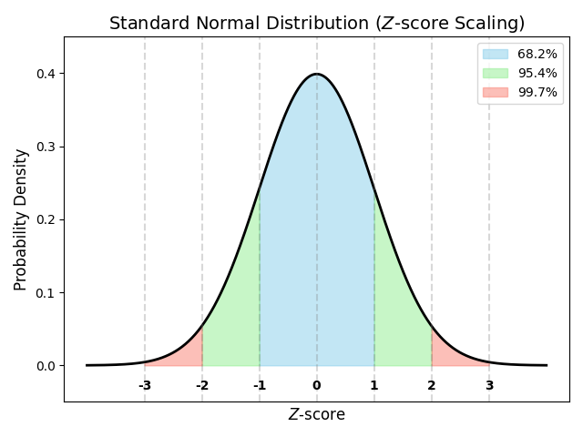
Figure_5.11: Standardization Normal Distribution.
5. Robust Scaling
If your data is plagued by extreme outliers that you cannot delete, Standardization will fail because outliers skew the Mean. Robust Scaling fixes this by using the Median and the Interquartile Range (IQR), ignoring the extremes entirely.
Step 6: Minimizing and Transforming Data
Sometimes we have too much data, or the data is in the different orientation for the model to understand. We can minimize the complexity of our dataset by applying mathematical operations like Rotation and Translation.
- Dimensionality Reduction (Rotation): Using techniques like Principal Component Analysis (PCA), we can mathematically "rotate" our entire dataset to look at it from an angle where the patterns are most obvious. By finding this optimal angle, we can often drop dozens of less important columns, minimizing the dataset's size while keeping 99% of the important information.
- Data Augmentation (Translation & Rotation): In fields like Computer Vision, if we don't have enough data, we can artificially create more by taking our existing images and rotating, flipping, or translating them. This teaches the model that a dog is still a dog, even if the picture is upside down.
Step 7: The Split (Train, Validation, Test)
If you train your model on all the data you have, how will you know if it actually learned the physics, or if it just memorized the dataset? To prove that your model can generalize to new, unseen data, you must set aside a portion of your dataset as a "Test Set" that the model never sees during training. This is the only way to get an honest, unbiased measure of how well your model will perform in the real world.
The Pre-Split Shuffle (Mixing the Deck): Before we slice the data, we must Randomly Shuffle it. Datasets are often recorded sequentially or grouped by category. If you split this un-shuffled data 80/20, your Training Set might only contain one category, and your model will fail spectacularly on the Test Set. Shuffling guarantees that both sets get a fair, randomized mix.
To prove our model actually works, we take our pristine, balanced, encoded, and shuffled dataset and chop it into three separate blocks:
- Training Set (Usually 70-80%): This is the textbook. The model uses this bulk of data to calculate Loss, perform Gradient Descent, and update its Weights.
- Validation Set (Usually 10-15%): This is the practice quiz. While the model is training, we periodically ask it to predict the Validation data. The model is not allowed to learn from this data; it only uses it to check if it is starting to Overfit.
- Test Set (Usually 10-15%): This is the final exam. Once the model is completely trained and finished, we test it one single time on this completely unseen data. The score it gets here is the true measure of its real-world performance.
Most researchers try machine learning tool to show their results in fancy way. But the common problem they do is they use the training data as testing and get 99% accuracy which is a cheating. Machine learning is not always to show 99% accuracy any how.
The Golden Rule (Beware the "Peeking Trap"): There is one critical sequencing rule you must follow when putting all these steps together. You MUST split your data into Train and Test sets BEFORE you do Feature Scaling or Mean Imputation.
If you fill Missing Values with the column's Average before splitting, you just used numbers from the Test Data to calculate that average! The Training Data has officially "peeked" at the Test Data. The model will score an artificial 99% in the lab, and completely fail in the real world. Always Split First, then Fit your scalers strictly on the Training Set. Furthermore, if you are dealing with sequential data (like predicting ocean tides over time), you cannot randomly shuffle your data before splitting it, to avoid "Data Leakage" from the future.
Questions that were not in the training data.
Q1: Should I split first or normalize first? when should I perform Transformation of data or rotation?
Q2: If I have different data sets with different range how will I normalize them?
Q3: which one is the best normalization technique?
Q4: How much data do I need for deep learning?
6. Introduction to Supervised Deep Learning
Supervised Deep Learning is the engine behind the most advanced AI systems today. At its core, it is a subfield of Machine Learning that uses Artificial Neural Networks (ANNs) to learn from labeled data. While traditional Machine Learning often requires manual feature engineering, Deep Learning models "deepen" their understanding by automatically extracting hierarchical features through multiple layers of abstraction.
Why Supervised Deep Learning? Supervised Learning remains the "bread and butter" of the industry. Most of the ML models uses supervised learning. If you have a data set with clear labels and you want to make a prediction with precision and accuntability , supervised learning is the way to go. Supervised learning is high precision and Reliability, clear Performance, Predictability.
Famous Supervised Models
Algorithms generally fall into two categories: Traditional Machine Learning (great for structured, tabular data) and Deep Learning (designed for complex, unstructured or spatial data).
1. Linear & Logistic Regression (The Foundations)
Linear Regression predicts continuous values (like temperature or price) by fitting a straight line through data points.
Equation: $\hat{y} = w_1x_1 + w_2x_2 + \dots + w_nx_n + b$
Logistic Regression is used for binary classification (Yes/No). It wraps the linear equation in a Sigmoid Function to squash the output into a probability between 0 and 1.
Equation: $\hat{y} = \sigma(w \cdot x + b)$ where $\sigma(z) = \frac{1}{1 + e^{-z}}$
2. Support Vector Machines (SVM)
Imagine plotting your data points on a graph. An SVM tries to draw a "hyperplane" between different classes. Its mathematical goal is to maximize the margin—the empty space between the closest data points (the support vectors) of different categories.
3. Decision Trees & Random Forests
A Decision Tree splits data based on a series of feature-based questions (e.g., "Is value > 50?"). A Random Forest is an ensemble method that builds hundreds of these trees using random subsets of data and averages their predictions to prevent the model from memorizing the training data (overfitting).
4. Deep Neural Networks (MLPs & CNNs)
Neural networks stack thousands of the foundational $w \cdot x + b$ equations into hierarchical layers. Each node calculates its output using an activation function:
$$a^{(L)} = \sigma(W^{(L)} a^{(L-1)} + b^{(L)})$$
- Multi-Layer Perceptrons (MLPs): Classic feedforward networks excellent at mapping highly non-linear relationships.
- Convolutional Neural Networks (CNNs) & U-Nets: Instead of looking point-by-point, these use "filters" to scan spatial data. Architectures like the U-Net are the industry standard for tasks requiring spatial context, such as image segmentation or grid-based super-resolution.
1. The Architecture of a Neural Network
A typical Deep Learning model is composed of three primary types of layers:
- Input Layer: Where raw data (pixels, text, or numbers) enters the network.
- Hidden Layers: These are the "thinking" layers. Each layer captures a different level of detail. For an image, early layers might detect edges, while deeper layers recognize complex shapes like eyes or wheels.
- Output Layer: The final destination that provides the prediction—either a category (Classification) or a specific value (Regression).
Deep Dive: What exactly are Weights and Biases?
You have seen the equation $y = w \cdot x + b$ multiple times now. But what do these letters actually represent in the real world? Think of a neural network as a massive control board, and the weights and biases are the dials and switches the model adjusts to tune into the correct answer.
Video 1: A visual demonstration of the model navigating the loss landscape.
Weights ($w$): The "Importance" Dials
A weight dictates the strength of the connection between an input and the output. If an input feature is highly relevant to the final prediction, the model will learn to assign it a large weight (either positive or negative). If a feature is useless noise, the network will shrink its weight down to zero, effectively turning that input "off."
Biases ($b$): The "Baseline" Anchors
A bias is an independent constant added to the calculation. It represents the baseline state or assumption of the output when all inputs are exactly zero. Without a bias, every mathematical prediction would be rigidly forced to pass through the absolute zero point $(0,0)$, which limits the model's flexibility.
A Real-World Example: Predicting Wave Heights
Imagine you are building a model to predict the height of ocean waves or a storm surge ($y$) based on environmental data.
- Input 1 ($x_1$): Wind Speed. This is critical. The model will assign a large positive Weight ($w_1$) to this input because higher wind speeds dramatically increase wave heights.
- Input 2 ($x_2$): Cloud Cover. This has almost nothing to do with hydrodynamic wave evolution. The model will eventually learn to assign a Weight ($w_2$) near 0, ignoring it.
- The Bias ($b$): Even on a perfectly calm day with absolutely zero wind ($x_1 = 0$), the ocean is never perfectly flat. There is always a baseline ambient swell. The Bias represents this natural, underlying wave height that exists independently of the immediate wind inputs.
In a Deep Learning model like a U-Net or a Multi-Layer Perceptron, there aren't just two weights and one bias—there are millions or even billions of them. Training the network is simply the mathematical process of finding the perfect configuration for all those tiny dials.
How the Model "Learns": The Optimization Loop
A Deep Learning model doesn't just memorize data; it optimizes itself. The learning process is an iterative cycle (repeated over many epochs) where the model makes a guess, measures how wrong it is, and updates its internal parameters (weights and biases) to do better next time.
Step 1: Forward Propagation (The Guess)
The model takes the input data $x$, passes it through its layers of weights $W$ and biases $b$, applies an activation function $\sigma$, and generates a prediction $\hat{y}$. At the very beginning of training, these weights are entirely random, so the first guess is usually terrible!
Step 2: Loss Calculation (The Reality Check)
Once the model makes its prediction $\hat{y}$, it compares it to the actual ground-truth label $y$. A Loss Function mathematically calculates the "distance" or error between the guess and the truth. For example, in regression tasks, we often use Mean Squared Error (MSE):
Step 3: Backpropagation & Gradient Descent (The Correction)
This is the true "learning" phase. The model works backward from the output to the input (Backpropagation), using calculus (the Chain Rule) to find the gradient—which tells us exactly how much each individual weight contributed to the overall error.
Then, an optimizer (like Stochastic Gradient Descent or Adam) adjusts the weights in the opposite direction of the error. The size of this adjustment is controlled by the Learning Rate ($\alpha$):
Q1: How does the model know what numbers to use for the weights and biases at the very beginning
7. Linear Regression: The "Hello World" of Supervised Learning
Linear Regression is universally considered the basic classifier of Machine Learning. Before diving into complex deep learning architectures, every data scientist starts here. At its core, it is a statistical method used to model the relationship between a dependent variable (\(y\), the outcome you want to predict) and one or more independent variables (\(x\), the features or data points you already have).
Furthermore, mastering this algorithm is non-negotiable if you want to truly understand Deep Learning. A single artificial neuron in a massive neural network is essentially just a linear regression equation wrapped in an activation function. By understanding how a simple line is mathematically fitted to data today, you are learning the exact foundational mechanics that power the world's most advanced predictive models.
1. The Mathematical Equation
We define our model as a activation function, denoted as \(h_{\theta}(x)\). This function maps input features to a predicted output through a weighted sum. In a formal context, we express this using Vector Dot Products, which is how modern machine learning libraries (like PyTorch or TensorFlow) actually perform these calculations. If we have a feature vector \(\vec{x}\) and a parameter vector \(\vec{w}\), the prediction is
What is Linear Regression?
At its most fundamental level, Linear Regression is a statistical method used to predict a continuous numerical value (the dependent variable) based on one or more input factors (the independent variables).
It is termed "linear" because it assumes a proportional, straight-line relationship between your inputs and your output.In simple linear regression, the relationship is expressed through the equation:
$$y = \beta_0 + \beta_1 x$$
- \(y\): The target or predicted value
- \(x\): The input feature or predictor.
- \(\beta_1\): The y-intercept, representing the value of $y$ when \(x\)is zero
- \(\beta_0\): The slope, representing the change in \(y\) for every unit change in \(x\)
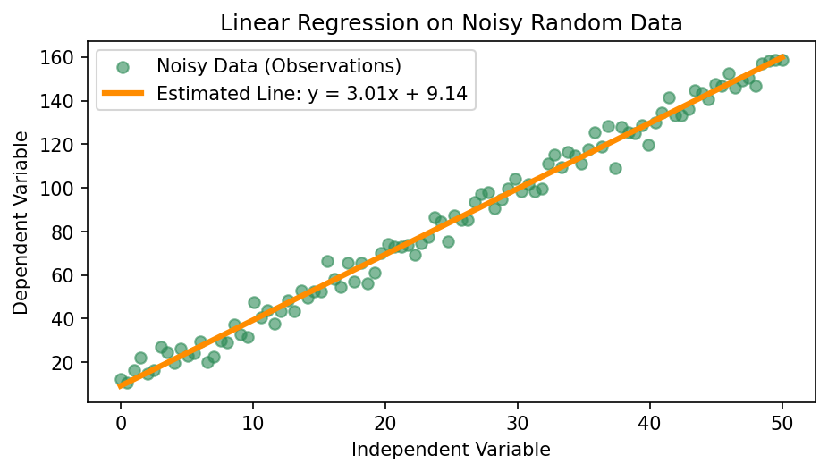
Figure_2.1: why Machine Learning should be used?
In multivariate linear regression, we represent the relationship between multiple independent variables and a single dependent variable using linear algebra.
For a dataset with $n$ observations and $k$ features, the components are defined as:
| Term | Name | Dimension | Description |
|---|---|---|---|
| $\mathbf{y}$ | Target Vector | $n \times 1$ | The observed values we want to predict. |
| $\mathbf{X}$ | Design Matrix | $n \times (k+1)$ | The input data. The first column is 1s for the intercept. |
| $\boldsymbol{\beta}$ | Parameter Vector | $(k+1) \times 1$ | The weights (coefficients) we need to estimate. |
| $\boldsymbol{\epsilon}$ | Error Vector | $n \times 1$ | The difference between predicted and actual values. |
To find the optimal coefficients $\hat{\boldsymbol{\beta}}$ that minimize the error, we solve:
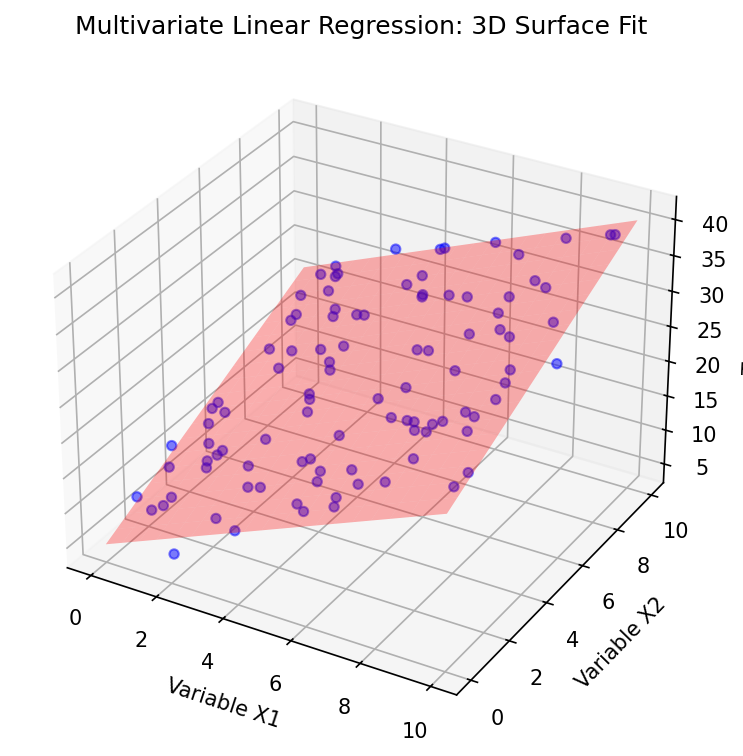
Figure_2.1: why Machine Learning should be used?
1. The Core Concept: The "Line of Best Fit"
Imagine a scatter plot representing house prices based on square footage. The data points are scattered, but they follow a clear upward trend. Linear Regression mathematically calculates the specific line that minimizes the total distance (error) between itself and every individual data point in the set.
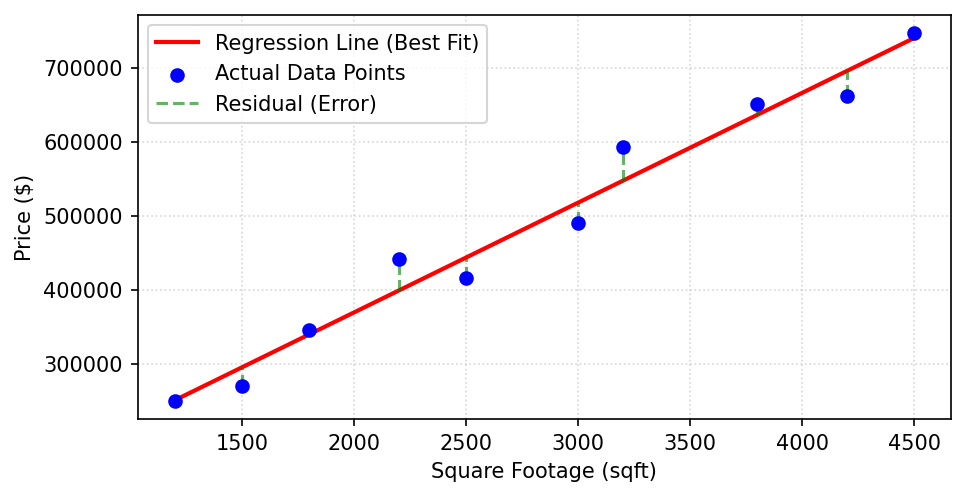
Figure_2.1: why Machine Learning should be used?
2. Geometric Interpretation
The "shape" of the model changes depending on the complexity of the data you provide:
- Simple Linear Regression (2D): With only one input (\(x\)), the model is a straight line on a standard graph.
- Multiple Linear Regression (3D): With two inputs, the model becomes a flat plane cutting through a cloud of data points.
- Higher Dimensions: Beyond two inputs, the model is referred to as a hyperplane. While we cannot visualize it, the math remains identical.
3. From Identity to Non-Linear Mapping
Linear regression can be viewed as the simplest form of a neural network. While a traditional linear model utilizes an identity activation function where the output is a direct linear combination of the inputs, a Neural Network introduces non-linearity by wrapping that combination in a specific function \(f\), such as \(\tanh\) or Sigmoid. Mathematically, Linear Regression is a special case of the neuron model \(y = f(Wx + b)\) where \(f(z) = z\).
The Bridge: Terminology Swap: we transition from Statistics to Deep Learning, the math remains consistent while the labels shift:
- Coefficients (\(\beta\)) \(\rightarrow\) Weights (\(w\))
- Intercept (\(\beta_0\)) \(\rightarrow\) Bias (\(b\))
- Normal Equation \(\rightarrow\) Backpropagation / Gradient Descent
- Standard Error \(\rightarrow\) Loss Function
4. The Objective: Minimizing the Residuals
A Linear Regression model doesn't just draw any line; it tries to find the "Line of Best Fit." It does this by measuring the distance between the actual data points and the predicted points on the line. These distances are called Residuals (or Errors).
Linear Regression isn't just a line; it is a system of vectorized operations designed to map inputs to outputs with minimal error. Below is the formal derivation of how the model defines itself and how it learns.
5. The Road Map

Figure_7.4: Road Map
Let's Do the Math: Step-by-Step Vector Problems
Problem 1:
To truly understand the mechanics of gradient descent, we must look "under the hood" and manually calculate the error for a small dataset. Consider a scenario in coastal oceanography where we want to predict wave height based on wind speed.
Wind speed in m/s is $(2,3,5)$ and wave height is $(1,2,4)$. Calculate the weight and bias for the data.
Suppose we have recorded three data points. We can represent our independent variable (wind speed in m/s) and our dependent variable (wave height in m) as vectors:
(Wind Speed) $$\vec{x} = \begin{bmatrix} 2 \\ 3 \\ 5 \end{bmatrix}$$
(Actual Height) $$\vec{y} = \begin{bmatrix} 1 \\ 2 \\ 4 \end{bmatrix}$$
Our objective is to calculate the optimal weight ($w$) and bias ($b$) to map $\vec{x}$ to $\vec{y}$. For this exercise, we define our stopping condition, or error tolerance, as $\epsilon = 0.05$.
Iteration 1: The Initial Guess
Before training begins, the model initializes with random parameters. Let us assume an initial weight of $w = 0.5$ and a bias of $b = -0.5$. We calculate our predicted wave heights ($\hat{\vec{y}}$) using the linear formula $\hat{\vec{y}} = \vec{w}\vec{x} + \vec{b}$:
Next, we calculate the Mean Squared Error (MSE) to quantify the inaccuracy of this initial guess:
$$MSE = \frac{(1 - 0.5)^2 + (2 - 1.0)^2 + (4 - 2.0)^2}{3} = \frac{5.25}{3} = 1.750$$Because our current error ($1.750$) is significantly greater than our tolerance ($\epsilon = 0.05$), the model must update its parameters. We calculate the gradients using the following partial derivatives:
- Gradient for weight ($w$): $\frac{\partial MSE}{\partial w} = -\frac{2}{3} [14] \approx -9.333$
- Gradient for bias ($b$): $\frac{\partial MSE}{\partial b} = -\frac{2}{3} [3.5] \approx -2.333$
We apply a Learning Rate ($\alpha$) of 0.05 to update the parameters:
$b_{new} = -0.5 - (0.05 \cdot -2.333) = \mathbf{-0.383}$
Iteration 2: The Downhill Step
Using our updated parameters, we calculate new predictions:
$$\hat{\vec{y}} = \begin{bmatrix} 0.967 \\ 0.967 \\ 0.967 \end{bmatrix} \begin{bmatrix} 2 \\ 3 \\ 5 \end{bmatrix} + \begin{bmatrix} -0.383 \\ -0.383 \\ -0.383 \end{bmatrix} = \begin{bmatrix} 1.551 \\ 2.518 \\ 4.452 \end{bmatrix}$$Recalculating the MSE: $MSE \approx 0.259$. The error has dropped drastically, but as $0.259 > 0.05$, we perform another update:
$b_{new} = -0.383 - (0.05 \cdot 1.014) = \mathbf{-0.434}$
Iteration 3: Refining the Fit
Repeating the process for the third time:
$$\hat{\vec{y}} = \begin{bmatrix} 1.172 \\ 1.975 \\ 3.581 \end{bmatrix}, \quad MSE \approx 0.069$$The error is approaching our threshold. Note that the weight gradient has become negative ($-1.217$), indicating the algorithm is self-correcting its path.
$b_{new} = -0.434 - (0.05 \cdot -0.181) = \mathbf{-0.425}$
Iteration 4: Reaching Convergence
With our Iteration 3 parameters, we arrive at our final calculation:
$$\hat{\vec{y}} = \begin{bmatrix} 1.303 \\ 2.167 \\ 3.895 \end{bmatrix}$$Final Mean Squared Error:
Conclusion: Because the $MSE < \epsilon$ ($0.044 < 0.05$), the model has successfully learned to fit the data within our specified error tolerance. We conclude the training phase here, having achieved an optimal linear fit.
Problem 2: Non-Linear Convergence with Heterogeneous Weights
Problem Statement:
A single neuron processes two inputs ($x_1 = 0.5, x_2 = -0.2$) with initial heterogeneous weights ($w_1 = 0.8, w_2 = 0.4$) and a bias ($b = -0.1$). The target output is $y = 0.5$. Using the Tanh activation function and a Learning Rate ($\alpha$) of 1.0, perform the necessary iterations to reach an error tolerance of $\epsilon = 0.05$.
View Complete Step-by-Step Solution
Phase 1: Derivative Derivation
To update the weights, we use Gradient Descent. The derivative of the Squared Error with respect to a weight $w_i$ using the chain rule is:
$\frac{\partial E}{\partial w_i} = \frac{\partial E}{\partial \hat{y}} \cdot \frac{\partial \hat{y}}{\partial z} \cdot \frac{\partial z}{\partial w_i}$
- $\frac{\partial E}{\partial \hat{y}} = -2(y - \hat{y})$ (Error Gradient)
- $\frac{\partial \hat{y}}{\partial z} = (1 - \tanh^2(z))$ (Tanh Derivative)
- $\frac{\partial z}{\partial w_i} = x_i$ (Input Gradient)
Iteration 1: Initial State
$z = (0.5 \cdot 0.8) + (-0.2 \cdot 0.4) + (-0.1) = 0.22$
$\hat{y} = \tanh(0.22) = \mathbf{0.2165}$
$MSE = (0.5 - 0.2165)^2 = \mathbf{0.0804}$
Since $0.0804 > 0.05$, we calculate the update signal ($\delta$):
$w_{1(new)} = 0.8 - (1.0 \cdot \delta \cdot 0.5) = \mathbf{1.070}$
$w_{2(new)} = 0.4 - (1.0 \cdot \delta \cdot -0.2) = \mathbf{0.292}$
$b_{(new)} = -0.1 - (1.0 \cdot \delta) = \mathbf{0.440}$
Iteration 2: Secondary Adjustment
$z = (0.5 \cdot 1.070) + (-0.2 \cdot 0.292) + 0.440 = 0.9166$
$\hat{y} = \tanh(0.9166) = \mathbf{0.724}$
$MSE = (0.5 - 0.724)^2 = \mathbf{0.0502}$
The error is effectively at the threshold, but technically $0.0502 > 0.05$. We perform one final update:
$w_{1(new)} = 1.070 - (1.0 \cdot 0.213 \cdot 0.5) = \mathbf{0.9635}$
$w_{2(new)} = 0.292 - (1.0 \cdot 0.213 \cdot -0.2) = \mathbf{0.3346}$
$b_{(new)} = 0.440 - (1.0 \cdot 0.213) = \mathbf{0.227}$
Iteration 3: Convergence
$z = (0.5 \cdot 0.9635) + (-0.2 \cdot 0.3346) + 0.227 \approx 0.6418$
$\hat{y} = \tanh(0.6418) = \mathbf{0.566}$
Final MSE: $(0.5 - 0.566)^2 = \mathbf{0.0044}$
Conclusion: The error ($0.0044$) is now well below the tolerance ($\epsilon = 0.05$). The model has converged.
Loss function of doubt is increasing.. Probable question forming.
Q1: The Vanishing Gradient: What happens at the extremes?
Q2: Learning Rate Sensitivity: When is $\alpha$ too high?
Q3: In real-world data where one input might be "Income" (thousands) and another is "Age" (tens), how do we prevent the model from ignoring the "Age" variable simply because its smaller numbers produce smaller gradients?
8. Multi-Layer Perceptrons (MLPs) & Backpropagation
Perceptron is one of the most basic components used in neural networks and is inspired by the way biological neurons transmit signals in the human brain. Its primary purpose is to perform binary classification, meaning it separates input data into one of two possible groups. In simple terms, a perceptron acts like a decision unit that evaluates several input values. Each input is assigned a certain importance, called a weight, and these weighted values are combined. If the resulting value exceeds a predefined threshold (activation level), the perceptron produces one outcome; otherwise, it produces the alternative outcome. This process allows it to make straightforward two-class decisions, similar to answering a basic “yes” or “no” question.
The "Should I Hit the Snooze Button?" Analogy 😴⏰
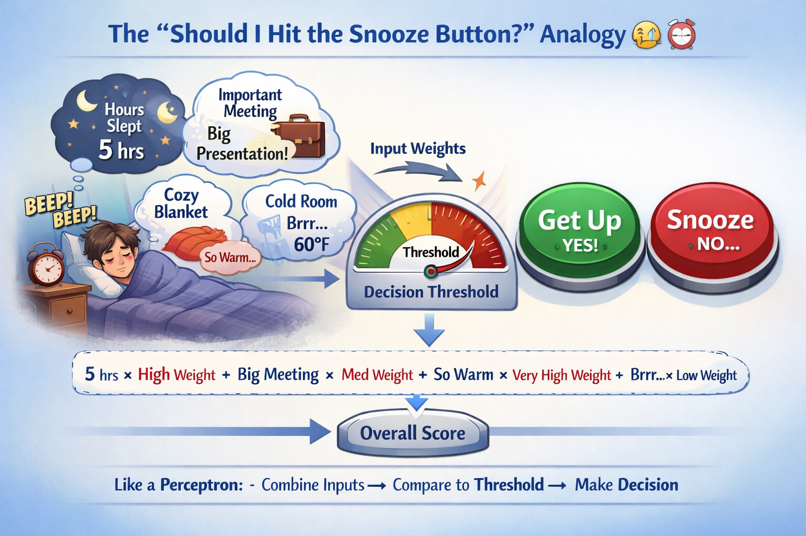
Figure_8.1: The "Should I Hit the Snooze Button?" Analogy
To understand how a perceptron works, imagine the familiar morning struggle with your alarm clock. The alarm rings, and your brain must decide whether to bravely get out of bed or heroically smash the snooze button and enjoy a few more minutes of sleep. This decision isn’t random—it depends on several factors working together.
You might think about 1. how many hours you slept the previous night, 2.how important your first meeting or class is, 3. how incredibly cozy your blanket feels, and 4.how painfully cold the room outside the blanket seems. Naturally, not all of these factors influence your decision equally. The comfort of your blanket might carry a huge influence, while the room temperature might only play a small role. The importance of your morning responsibilities might also strongly push you toward getting up.
Your brain essentially weighs each of these factors based on how important they are, combines their influence, and then compares the result to an internal threshold. If the final motivation level crosses that threshold, you drag yourself out of bed. If it doesn’t, the snooze button wins and you drift back into dreamland.
This is exactly how a perceptron works in machine learning. It takes multiple inputs, assigns different weights to them, adds them together, and checks whether the result crosses a certain threshold. Based on that comparison, it makes a simple yes-or-no decision. In other words, your brain in the morning is basically running a biological perceptron—one that often gives very high weight to blanket warmth.
1. Types of Perceptrons
Perceptrons are Single layer and multi layer.
Single-Layer Perceptron: connects input and out put with an activation function. It is most fundamental one. Single layer perceptrons includes binary classification like filtering spam, as a final layer of Deep Learning models, fundamental educational tool.
As we discovered earlier, a Single-Layer Perceptron hits a brick wall the moment data is no longer perfectly separated by a straight line. By stacking multiple layers of neurons and introducing non-linear activation functions (like ReLU or Tanh), the Multi-Layer Perceptron (MLP) overcomes this limitation entirely.
An MLP consists of an input layer, one or more "hidden" layers, and an output layer. The math flows forward layer by layer. For a simple network with one hidden layer, the equations are:
The Forward Pass
Layer 1 (Hidden Layer): Calculate the linear weights, then apply an activation function (like ReLU, where $f(x) = \max(0, x)$).
Layer 2 (Output Layer): Take the activated output from Layer 1 and pass it through the final weights to get the prediction ($\hat{y}$).

Figure_8.2: Feed Forward Architecture of a Multi-Layer Perceptron
The Recurrent Network
A RNN updates its weights and biases based on the error gradient, similar to how an MLP learns. However, RNNs have connections that allow information to persist over time, making them suitable for sequential data.
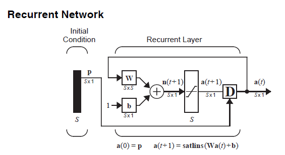
Figure_8.3: Feed Forward Architecture of a Multi-Layer Perceptron
How to update weights and baised are discussed in the next section elaborately. We can take a small problem to uderstand the concept better.
The Backpropagation Network
The goal of training an MLP is to minimize the loss function by adjusting the network's weights and biases. This is achieved through backpropagation:
When a neural network makes a prediction, data flows from the inputs to the outputs. This is the Forward Pass. However, the network rarely guesses correctly on the first try. To improve, it must calculate its error and send that error backwards through the network to adjust the weights. This process is called Backward Propagation of Errors, or simply Backpropagation.
At its core, Backpropagation is just the systematic application of the Chain Rule from calculus. It asks one fundamental question for every single weight in the network: "If I change this specific weight by a tiny amount, how much does the final error change?"
Part 1: How It Works (Step-by-Step)
Let's break down the algorithm layer by layer. Assume we have a standard 3-layer architecture: an Input Layer, a Hidden Layer, and an Output Layer.
Step 1: The Forward Pass & Loss Calculation
Data passes through the network to generate a prediction ($\hat{y}$). We then use a Loss Function (like Mean Squared Error) to measure how far our prediction is from the actual target ($y$).
Step 2: Gradients of the Output Layer
We start working backwards. To update a weight connecting the hidden layer to the output layer ($w_{out}$), we need to find the derivative of the Loss with respect to that weight ($\frac{\partial L}{\partial w_{out}}$). Using the Chain Rule, this is calculated in three linked parts:
- How does the Loss change with the final prediction? $\frac{\partial L}{\partial \hat{y}} = (\hat{y} - y)$
- How does the prediction change with the net input ($z_{out}$)? We take the derivative of the activation function: $f'(z_{out})$
- How does the net input change with the weight? This is simply the activation coming from the hidden layer: $a_{hidden}$
We multiply these together to get the gradient. The first two parts are often combined and called the Output Error Signal ($\delta_{out}$).
Step 3: Gradients of the Hidden Layer
Now we move one layer deeper. To update a weight connecting the input to the hidden layer ($w_{hidden}$), we must pass the error backwards through the output weights.
The Hidden Error Signal ($\delta_{hidden}$) is calculated by taking the Output Error Signal ($\delta_{out}$), multiplying it by the weight connecting the two layers ($w_{out}$), and multiplying that by the derivative of the hidden activation function: $f'(z_{hidden})$.
Once we have $\delta_{hidden}$, the gradient for the hidden weight is simply: $\delta_{hidden} \times \text{Input Value}$.
Step 4: The Weight Update
Finally, we use Gradient Descent to update every weight in the network simultaneously. We multiply the calculated gradient by our Learning Rate ($\alpha$) and subtract it from the old weight.
Part 2: Fully Solved 3-Layer Mathematical Trace
Let's put the theory into practice with real numbers across a 3-layer network (Input $\rightarrow$ Hidden $\rightarrow$ Output).
Backpropagating doubts through all mental layers.
Q1: What are there in AI which is not Machine Learning?
Q2: Can machine learn without help of human?
Q3: Is chatbot a part of Machine Learning?
9. The activation function: the secret agent.
Neural networks gain their power by stacking layers with different mathematical properties. By using a non-linear activation function in hidden layers and a specific output function at the end, the model can learn almost any complex mapping.
What is it & Why do we need it?
An Activation Function is a mathematical gatekeeper attached to every neuron. It takes the weighted sum of inputs ($n$) and determines the final output signal ($a$).
The "Secret Agent" Mission: Without these functions, a neural network is just a giant linear regression model. Activation functions introduce Non-Linearity, allowing the network to learn complex, curvy patterns like human faces, spoken words, or stock market trends.
Common Transfer Functions & Implementations
| Name | Graphical Representation | Math Relation | Range | Python (TensorFlow) |
|---|---|---|---|---|
| Hard Limit | 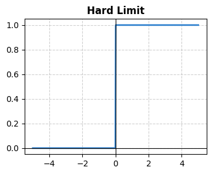 |
\(a = \begin{cases} 0, & n < 0 \\ 1, & n \geq 0 \end{cases}\) | [0, 1] |
N/A (Custom or |
| Linear | 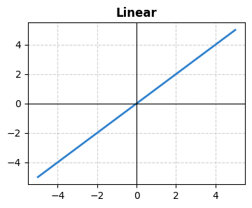 |
\(a = n\) | (-∞, ∞) |
tf.keras.activations.linear |
| Log-Sigmoid | 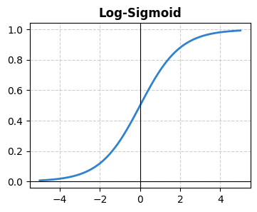 |
\(a = \frac{1}{1 + e^{-n}}\) | [0, 1] |
tf.keras.activations.sigmoid |
| Hyperbolic Tangent |  |
\(a = \tanh(n)\) | (-1, 1) |
tf.keras.activations.tanh |
| Positive Linear (ReLU) | 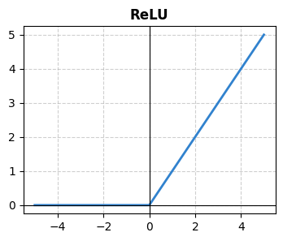 |
\(a = \max(0, n)\) | [0, ∞) |
tf.keras.activations.relu |
| Leaky ReLU |  |
\(a = \begin{cases} n, & n \geq 0 \\ 0.01n, & n < 0 \end{cases}\) | (-∞, ∞) |
tf.nn.leaky_relu |
| Softmax (Competitive) |  |
\(a_i = \frac{e^{n_i}}{\sum e^{n_j}}\) | [0, 1] |
tf.keras.activations.softmax |
The Architect's Guide: Choosing the Right Function
1. Hidden Layers
- ReLU: The Gold Standard. Cheap, fast, and avoids vanishing gradients.
- Leaky ReLU: Use if your neurons are "dying" (always outputting zero).
- Tanh: Preferable for Recurrent Networks (RNNs).
2. Output Layers
- Linear: For Regression (predicting prices/values).
- Sigmoid: For Binary Classification (Yes/No).
- Softmax: For Multi-class Classification (Cat/Dog/Bird).
Strategic Implementation
Note: You can use different functions in different layers! A standard modern deep network often uses ReLU for all hidden layers and Softmax for the final output layer.
* Note: softmax is the modern differentiable equivalent of the competitive function used in deep learning.
Activation function: ReLU (Really Extremely Lost).
Q1: Do I leave 'Dropout' turned on when I actually use the model in the real world?
Q2: How long should I wait before 'Early Stopping' kicks in?
Q3: How do I actually know what numbers to choose for these dials?
- Batch Size: Start with 32. (Commonly powers of 2: 16, 32, 64, 128).
- Learning Rate: Start with 0.001 (especially if using the Adam optimizer).
- Dropout: Start at 0.2 (dropping 20% of neurons) up to 0.5.
10. The Control Dials: Hyperparameters Explained (Epochs, Batch Size, Learning Rate, Optimizer, Regularization, Dropout)
Up to this point, we have discussed Parameters (the weights and biases). These are the numbers the model learns entirely on its own during training. However, there is a second set of numbers called Hyperparameters. These are the settings you must configure before the training even begins. They dictate exactly how the learning process behaves.
1. Epochs: The Study Sessions
An Epoch is one complete pass of your entire training dataset through the algorithm. Because neural networks learn through gradual optimization (Gradient Descent), passing the data through the network just once is never enough. The network needs to see the data multiple times to update its internal parameters (weights and biases) and get better at predicting.
Imagine you are studying for a massive math exam. If you read the textbook from cover to cover exactly one time, that is 1 Epoch. Will you get a perfect score? Probably not. You need to read the book multiple times (multiple epochs) to truly understand the patterns and memorize the formulas.
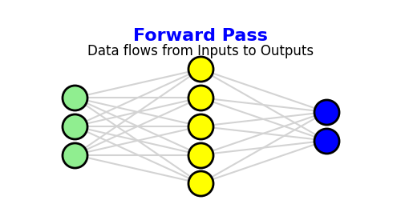

Figure 9.1: Left: Static Feed Forward Architecture. Right: Animated Training Cycle showing Forward and Backward Passes.
- Why one isn't enough: If you show a model a dataset of historical oceanographic data just once, it will underfit. It needs to see the same data repeatedly to adjust its weights accurately.
- The danger of too many: If you run too many epochs (e.g., 5,000), the model will memorize the training data perfectly but fail on new, unseen data. This is called Overfitting.
2. Batch Size: Processing in Chunks
Datasets are often too massive to push through a network all at once. If you are training a heavy spatial architecture like a Residual U-Net on high-resolution grid data, your GPU simply doesn't have the memory (VRAM) to hold it all. We solve this by dividing the data into chunks.
Because modern datasets are usually too massive to feed into a computer's memory (like a GPU) all at once, the data must be divided into smaller, manageable chunks. The Batch Size is the specific number of training examples the neural network processes simultaneously before it pauses to calculate its errors and update its internal parameters (weights and biases).
Let's stick to the studying analogy. If the entire textbook is your dataset, you wouldn't try to memorize the entire book in one giant gulp before checking if you learned anything. Instead, you might break the material down into stacks of several chapters(batch). You study one chapter at a time (one Batch), take a quick quiz to see what you got wrong, correct your misunderstandings (update the weights), and then move on to the next chapter.
Processing one stack of flashcards and updating your brain is called an Iteration. Once you have gone through every single stack of flashcards, you have officially completed 1 Epoch!


Figure 9.1: Left: Static Feed Forward Architecture. Right: Animated Training Cycle showing Forward and Backward Passes.
3. Connecting the Dots: The Mathematical Relationship
Epochs and Batch Size are intimately linked by a third, resulting metric: Iterations (often called "steps"). The relationship between them is a simple formula based on the total size of your training data.
Let's bring it back to our study analogy. Imagine your entire exam syllabus has 1,000 flashcards (Total Dataset Size).
- If you set your Batch Size to 100, it means you study 100 cards before pausing to update your understanding.
- It will take exactly 10 study sessions (Iterations) to get through the entire deck.
- Once you finish those 10 sessions, you have completed exactly 1 Epoch.
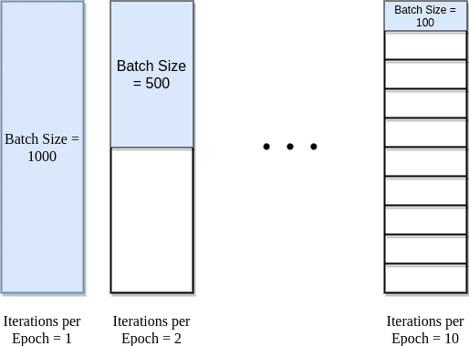
Figure 9.4: Epoch vs iteration vs batch size relationship. The total dataset size is 1000. Batch size of 100 means 10 iterations per epoch. Batch size of 50 means 20 iterations per epoch, and so on.
Source: Baeldung
If your training plan requires 50 Epochs (reading the whole deck 50 times), your brain will perform a total of 500 individual study updates (Iterations) by the time training is finished. Understanding this math is crucial, as adjusting your batch size directly changes how frequently your model updates its weights during a single epoch!
- Batch Size: The number of training examples processed together in one forward/backward pass.
- Iterations: The number of batches needed to complete one full Epoch.
A common question when tuning hyperparameters is: "If I double my Batch Size, do I need to increase my Learning Rate to compensate?"
Yes. Because a larger batch size processes more data at once, it calculates a much more accurate and stable gradient (meaning less "noise" or random jumping in your step direction). However, because you are processing larger chunks of data at a time, your model takes fewer overall steps per epoch. To ensure the model learns at the same pace and takes full advantage of that increased stability, you need to scale the learning rate up.
1. The Linear Scaling Rule (For Standard SGD)
If you are using a standard optimizer like Stochastic Gradient Descent (SGD), the industry-accepted practice is to scale the learning rate linearly. If you double the batch size, you double the learning rate.
2. The Square Root Scaling Rule (For Adaptive Optimizers)
While the linear rule is standard for SGD, researchers using adaptive optimizers (like Adam or RMSprop) often prefer a more conservative approach. Because these optimizers already adjust their own step sizes dynamically, scaling linearly can sometimes make the initial steps too aggressive. Instead, the rule of thumb is to multiply the learning rate by the square root of the change.
5. The "Safety" Dials: Regularization & Dropout
In Machine Learning, bigger isn't always better. If a model is too complex, it begins to "memorize" the training data (including the noise and errors) rather than "learning" the underlying patterns. This is Overfitting. To stop this, we use the following mathematical and structural "brakes."
Types of Regularization
- 1. Early stopping
- 2. L1, L2
- 3. Drop out
1. Early Stopping:
As a model trains, its error on the training data always decreases. However, there is a turning point where the model stops learning actual patterns and starts memorizing noise. Early stopping is a simple rule: monitor the model's performance on a separate "Validation Set." The moment the validation error stops going down and starts going back up, you immediately stop training. It is the equivalent of taking a test away from a student before they "over-study" and confuse themselves.
2. L1 / L2:
These techniques add a mathematical penalty to the Loss Function based on the size of the model's weights. L1 (Lasso) adds the absolute value of the weights, often pushing unimportant weights to exactly zero (Feature Selection). L2 (Ridge) adds the squared value of the weights, shrinking them to be very small but non-zero, ensuring stability and preventing any single feature from dominating.
To understand L1 and L2 regularization properly, you have to look at them as "penalties" added to the model's total score. In a standard model, the goal is simply to minimize Loss (error). With regularization, the goal changes. Now, the model has to minimize:
If the weights (\(w\)) get too large or complex, the Penalty goes up, and the model gets a "bad grade."
L2 Regularization (Ridge Regression)
L2 is the most common form of regularization. It adds a penalty equal to the square of the magnitude of the weights.
- The Math: \(\text{Penalty} = \lambda \sum w^2\)
- The Behavior: Because it squares the weights, it punishes large weights very harshly (e.g., a weight of 10 becomes a penalty of 100). However, as the weight gets smaller (like 0.1), the penalty becomes tiny (0.01).
- The Result: It nudges all weights to be very small, but almost never exactly zero.
L1 Regularization (Lasso Regression)
L1 adds a penalty equal to the absolute value of the magnitude of the weights.
- The Math: \(\text{Penalty} = \lambda \sum |w|\)
- The Behavior: Unlike L2, the penalty for L1 is constant all the way down to zero. It doesn't get "gentler" as the weight gets smaller.
- The Result: It forces the least important features to become exactly zero. This is called Sparsity. It effectively performs "feature selection" for you.
Key Differences at a Glance
| Feature | L1 (Lasso) | L2 (Ridge) |
|---|---|---|
| Penalty Shape | Diamond (corners at axes) | Circle (smooth) |
| Weight Impact | Can push weights to 0. | Pushes weights to be small. |
| Primary Use | When you want a simple model that only uses the most important data. | When you want to use all data but prevent "bullying" by huge weights. |
| Robustness | Robust to outliers. | Sensitive to outliers (due to squaring). |
What is \lambda$ (Lambda)?
In both formulas, you'll see a \(\lambda\) (Lambda). This is the Regularization Strength dial:
- If \(\lambda\) is 0: There is no penalty (Overfitting risk).
- If \(\lambda\) is huge: The penalty is so high the model is scared to learn anything (Underfitting risk).
Q4: How do I choose the value of $\lambda$ (Lambda) for Regularization?
Because $\lambda$ acts as a penalty multiplier, you want to test it on a logarithmic scale. Instead of testing 1, 2, 3, 4... you test by factors of 10.
Start very small, like 0.0001 or 0.001. Train the model. If it is still overfitting (scoring high on practice tests but failing the validation test), increase $\lambda$ by a factor of 10 (e.g., to 0.01). Keep turning up the strictness until the validation score stabilizes.
Summary: Use L2 if you want to keep all your features but keep them in check. Use L1 if you want to simplify your model by deleting the useless features entirely.
Would you like to see the Learning Rate next, to see how the model actually "walks" toward these optimized weights?
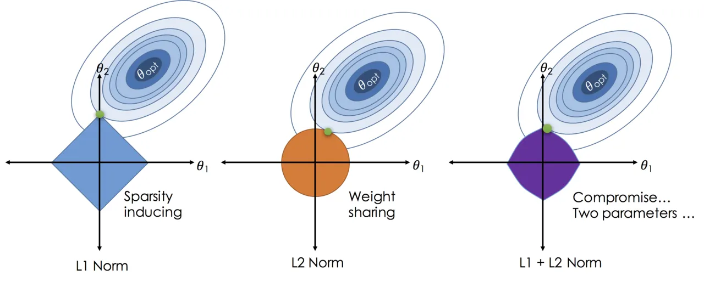
Figure 9.6: Epoch vs iteration vs batch size relationship. The total dataset size is 1000. Batch size of 100 means 10 iterations per epoch. Batch size of 50 means 20 iterations per epoch, and so on.
Source: Shubham
Example: The Swimmer's Constraint
Imagine a swimmer with too much energy zig-zagging in their lane, getting distracted by tiny ripples (Overfitting). We put a drag suit or weighted belt on them (the Penalty Term). Because moving is now mathematically "heavy" and expensive, the swimmer can no longer afford to zig-zag. They are forced to ignore the distractions and focus 100% of their energy on the straightest, most efficient path forward.

3. Drop out:
Used primarily in Deep Learning, this technique randomly "turns off" a specific percentage of neurons (e.g., 20% to 50%) during each training iteration. By constantly changing the active architecture of the network, it prevents neurons from co-adapting or relying too heavily on their neighbors to fix errors.
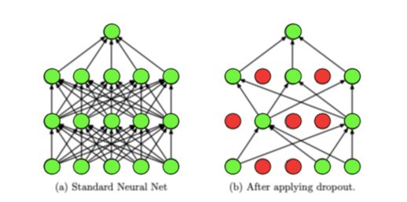
Figure 9.9: Dropout technique in action. Neurons are randomly deactivated during training, forcing the network to learn more robust features.
Source: Analytics Vidhya
Example: The Random Scrimmage
Imagine a football team that relies entirely on their star player. If that player is covered, the team loses. To fix this, the coach runs a practice where they randomly bench players every few minutes—sometimes even the star. The remaining players can no longer just pass the ball and hide; they are forced to take responsibility and learn to play-make independently. When the whole team plays together later, they are vastly more robust.
Questions escaping dropout regularization.
Q1: Do I leave 'Dropout' turned on when I actually use the model in the real world?
Q2: How long should I wait before 'Early Stopping' kicks in?
Q3: How do I actually know what numbers to choose for these dials?
- Batch Size: Start with 32. (Commonly powers of 2: 16, 32, 64, 128).
- Learning Rate: Start with 0.001 (especially if using the Adam optimizer).
- Dropout: Start at 0.2 (dropping 20% of neurons) up to 0.5.
11. TensorFlow and PyTorch: Getting Started-Moving from manual calculus to modern Deep Learning frameworks.
We learnt about the machine learning concepts and their mathematical foundations. If we code this to implementation, we would need to manually handle all the matrix operations and gradient calculations. Our brain works serially for performing any kind of calculation, whereas computers can work parallelly to solve the problem. So why not use pre-defined libraries and environments? It saves time.
The famous libraries are TensorFlow and PyTorch. Both are powerful, but they have different design philosophies and use cases. Let's explore what makes each of them unique and how to get started with installation.
TensorFlow
The name TensorFlow is a direct reflection of how the library handles data and computation. It was created by Google Brain. It is a combination of the two core concepts that drive the framework: Tensors (the data) and Graphs (the flow). More precisely, a tensor is a generalization of scalars (0-dimensional tensor), vectors (1-dimensional tensor), matrices (2-dimensional tensor), and N-dimensional tensors. The flow refers to the Data Flow Graph. The Neural network is a flow of Data Graphs or tensors flowing through the graph.
PyTorch
Unlike early versions of TensorFlow, which felt like writing a different language inside Python, PyTorch was designed to be "Pythonic."
Torch was a scientific computing framework based on a programming language called Lua. It was used extensively by researchers at places like NYU and Facebook AI Research (FAIR). While Torch was powerful and fast, Lua isn't nearly as popular as Python. In 2016, the team at FAIR (now Meta AI) took the powerful C++ backend of Torch and wrapped it in a beautiful, intuitive Python interface. Thus, PyTorch was born.
| Feature | PyTorch | TensorFlow |
|---|---|---|
| Philosophy | Imperative (Eager execution) | Declarative (Graph-based) |
| Learning Curve | Shallow (Feels like Python) | Steeper (Unique syntax/APIs) |
| Main Strength | Research & Prototyping | Production & Deployment |
| Mobile/Edge | PyTorch Mobile (Growing) | TF Lite (Industry Standard) |
| Community | Dominant in Academia | Dominant in Industry/Legacy |
How to install TensorFlow and PyTorch
Before installing, remember that a Tensor is just a container for data. Depending on how much data you have, the "shape" of that container changes.
For installing these frameworks, you need to have a basic Python environment set up on your system. Click on your operating system below to reveal the specific installation commands:
Part 1: Why Do You Need a Virtual Environment?
When you install Python on your computer, it comes with a central "global" storage area for packages. If you open your terminal and type pip install tensorflow, it goes straight into this global space.
The Problem: Dependency Collisions
Imagine you are working on Project A (an older computer vision task) that absolutely requires TensorFlow 2.5 and NumPy 1.19. Six months later, you start Project B (a modern natural language model) that requires PyTorch 2.1 and NumPy 1.24.
If you install Project B's requirements into your global environment, it will overwrite NumPy. Suddenly, Project A is broken. If you try to fix Project A, Project B breaks. This endless cycle of breaking code is known by developers as "Dependency Hell."
Before installing, it is highly recommended to use a virtual environment (likevenv or conda) to keep your project dependencies isolated. Open your terminal or command prompt and run the following commands based on your OS.
Protecting your machine from "Dependency Hell."
The Solution: Isolated Workspaces
A Virtual Environment is an isolated, self-contained directory that contains its own unique Python installation and its own local package manager.
- Isolation: What you install in Environment A cannot affect Environment B.
- Reproducibility: You can easily export a list of the exact package versions in your environment, allowing another researcher to perfectly recreate your setup on their machine.
- Cleanliness: If an environment gets corrupted or messy, you can simply delete the folder and start over without damaging your computer's core operating system.
Part 2: How to Create a Virtual Environment
There are two primary tools used in Data Science to create environments: Conda and Venv. Conda is highly recommended for Deep Learning because it also manages external hardware libraries (like NVIDIA CUDA toolkits for your GPU), whereas Venv only manages Python packages.
Questions escaping dropout regularization.
Q1: Can I install any of the software on my phone or iPad?
Q2: Which laptop is best for Machine Learning?
Q3: Which framework do I (the developer of this tutorial) use?
Q4: Follow-up: Why did you use TensorFlow instead of PyTorch from the beginning?
12. The ultra sound of machine learning: How does a machine learning model work in a computer program?
Up to this point, we have talked about models "learning," "penalizing," and "taking steps." Because of these human-like words, it is easy to imagine an AI as a glowing digital brain thinking inside your computer.
Let's perform an "ultrasound" on a software application to see what a Machine Learning model actually looks like in reality. When you strip away the hype, a trained model is not a brain; it is simply a file full of numbers and a mathematical pipeline.
1. The "Brain" is Just a Dictionary of Weights
Remember the optimization process where Gradient Descent found the perfect parameters (\(\theta\)) to minimize error? Once training is finished, the "learning" stops entirely.
The developer saves those final, optimized weights into a standard computer file (often with extensions like .pkl, .h5, or .onnx). If you were to open this file, you wouldn't see thoughts or logic—you would just see massive matrices of decimal numbers. This file is the model.
2. The Inference Pipeline (How it Runs)
When you use an app that has AI (like a movie recommender or a spam filter), the software program runs a specific three-step pipeline called Inference (the act of making a prediction).
1 Preprocessing (Translation)
Mathematical formulas cannot read text or look at JPEGs. The computer program must first translate the user's input (e.g., an image of a cat) into a format the model understands: a vector (array) of numbers. For an image, this means turning pixels into color values from 0 to 255.
2 The Forward Pass (The Math)
The software loads the saved "Weights File" into the computer's memory (RAM or GPU). It then takes the input vector from Step 1 and multiplies it against the weights using the exact hypothesis equation we learned: \(\hat{y} = X\theta\). Millions of dot products happen in a fraction of a second.
3 Post-processing (Interpretation)
The output of the math equation is just another raw number (e.g., 0.89). The software program includes standard code (like if/else statements) to translate that number back into human reality. For example: "If the result is > 0.5, display the word 'Spam' on the screen."
The Anatomy of an AI Application
Traditional App: Data + Rules (Code) = Answers
Machine Learning App: Data + Answers = Rules (The Weights File) \(\rightarrow\) Use rules to process new Data!